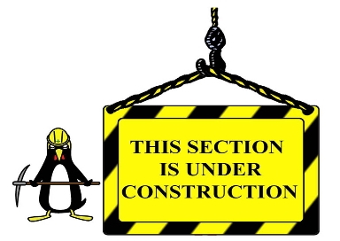

TeamWorship
is an online tool intended to help worship ministries schedule, communicate and
collaborate.
Worship leaders can build complete services online and have team members reference the
website for updates.
Members can update their availability, view service details, request service changes and
communicate with other team members.

This Online Help Is Currently Under Construction
Please be patient as we work towards providing you with the information needed.